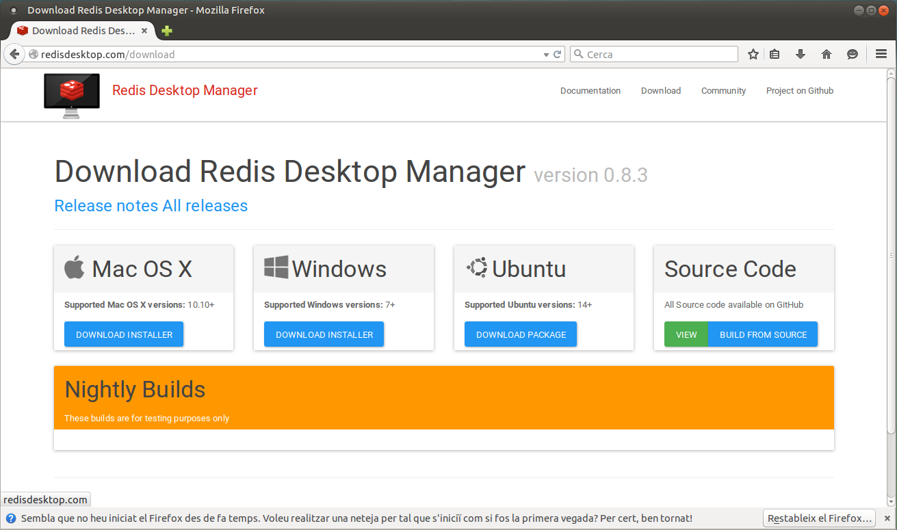
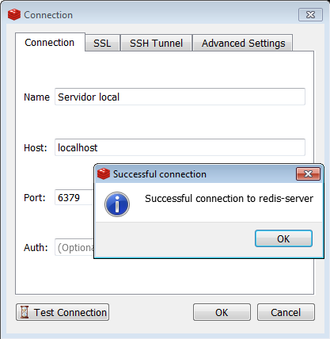
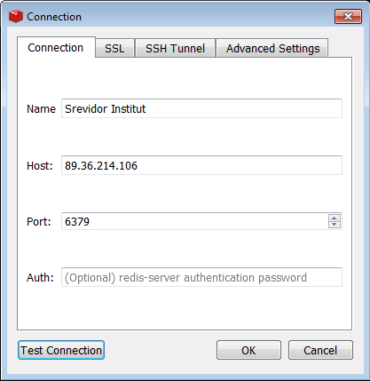
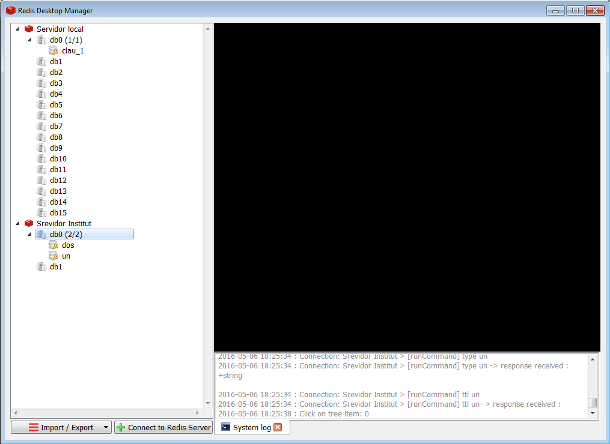

2.2 - Entron gràfic: Redis Desktop Manager
Com hem comprovat en el punt anterior, la connexió que fem des del client és a través de consola. Per tant haurem de posar comandos i ens contestarà la seua execució.
Podem instal·lar-nos una aplicació gràfica que faça un poc més atractiva la presentació.
La instal·lació d'aquesta eina és totalment optativa, no cal que la feu. De fet, ens els exemples que es mostraran en tot el tema només s'utilitzarà el mode consola.
És completament independent del servidor, i podem instal·lar-la perfectament sense tenir el servidor, utilitzant-la aleshores per a connectar a un servidor remot.
El podem baixar lliurement de la pàgina oficial redisdesktop.com on podrem comprovar que tenim per a totes les plataformes:

Instal·lació en Ubuntu
Ens baixarem el paquet que haurem d'instal·lar bé amb el Centre de programari d'Ubuntu, o bé senzillament des d'una terminal, situats al directori on l'hem baixat fent
sudo dkpg -i redis-desktop-manager_0.8.3-120_amd64.deb
Com veieu fan falta permisos d'administrador, i si no hi ha problemes de dependències, s'instal·larà sense problemes.
Com que és igual que en Windows, si teniu curiositat mireu la imatge posterior de quan està instal·lat, per a comprovar la connexió al servior.
Instal·lació en Windows
En Windows el que ens baixarem és un exe. L'executem (permetent l'execució quan ho pregunta Windows) i li podem donar a totes les opcions per defecte.
Quan l'executem, ens eixirà la següent pantalla:

Podem comprovar que baix tenim el botó per a connectar a un servidor. Per a connectar al servidor local li posem com a adreça localhost. En la imatge s'ha fet el test de connexió.

Per a connectar a un remot, posarem la seua adreça:

En aquesta imatge es veu com hem connectat perfectament als dos servidors. Es pot comprovar com en cadascun d'ells hi ha més d'una Base de Dades, però nosaltres només utilitzarem la db0, que és a la que es connecta per defecte.

Llicenciat sota la Llicència Creative Commons Reconeixement SenseObraDerivada 4.0